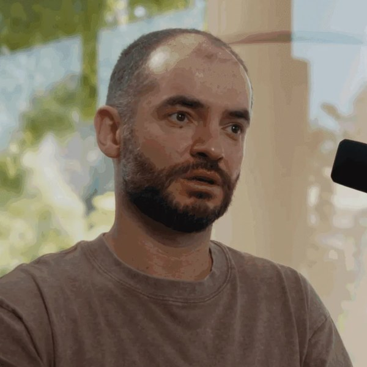

スケールすれば賢くなるのか
― AlexNet（2012）から 2026 年まで
「大きくすれば賢くなる」という流れと、「大きくするだけでは AGI に届かない」という流れ。
2つの変遷を、論文と公式資料でたどる。
スケールの流れ
AlexNet → Transformer → スケーリング則
3人の今
ヒントン・クリジェフスキー・サツケバー
もう1つの流れと今
スケールだけでは AGI に届かないのか
2つの流れは、同じ14年間に並んで進んできた
なぜ AlexNet から説明を始めるのか
画像認識の大会（ILSVRC）の top-5 誤り率
従来の手法：画像のどこを見るか（特徴）の計算方法を、人が設計していた
| 理由 | |
|---|---|
| 1 | 「大きなモデル＋大量のデータ＋GPU」が初めて大差で勝った。2年かけて 2 ポイントしか下がらなかった誤り率が、一度に約 11 ポイント下がった |
| 2 | 論文自身が「スケールすれば良くなる」と書いていた（下の引用）。ネットワークの大きさを決めたのは GPU のメモリと学習時間だった |
| 3 | 作った3人が、その後の2つの流れの中心にいる。GPT を進めた人も、「研究の時代へ」と言った人も、AI の危険を警告する人もこの3人の中にいる |
2012年 AlexNet：大きなモデル・大量のデータ・GPU
- 畳み込み 5 層＋全結合 3 層。6,000万パラメータ・65万ニューロン
- ImageNet の 120万枚で学習
- GPU（GTX 580・3GB）2枚で 5〜6 日
ILSVRC-2012 の top-5 誤り率
2位に 約11ポイントの差。特徴を人が設計する手法から、データから学ぶ大きなネットワークへ流れが変わった。
AlexNet を作った3人

ジェフリー・ヒントン
（当時）トロント大学の教授。2人の指導教員
アレックス・クリジェフスキー
（当時）大学院生。実家の PC の GPU 2枚で学習を動かした

イリヤ・サツケバー
（当時）大学院生。ImageNet に挑むことを主張した
2017年 Transformer：再帰も畳み込みも使わない
3つとも文の特徴抽出の方式。特徴は翻訳・次の語の予測・分類に使う。Transformer の論文は翻訳で試した。
Transformer は注意機構だけで作る。順番待ちがないので GPU を増やすほど速く学習でき、モデルとデータを大きくできた。今の主な LLM はこの構造。
2019年「苦い教訓」：計算を生かす手法が勝つ
| それまでの考え方 | サットンが70年の AI 研究から読み取ったこと |
|---|---|
| 人の知識を作り込む 例：チェスの定石・画像の特徴を人が設計 | 短い期間では役に立つ。しかし長い目で見ると、計算量を生かす汎用の手法（探索と学習）に負けてきた |
AlexNet も Transformer もこの例。「工夫するより大きくする」という考え方の支えになった。
パラメータ数は 8 年で約 3,000 倍に
- AlexNet（2012）：6,000万
- GPT-2（2019）：15億
- GPT-3（2020）：1,750億。例を数個見せるだけで新しい課題をこなした
- その後は 約1兆で3年間横ばい。ただし最先端の研究所は数を公表しなくなった
パラメータ数が横ばいでも、学習の計算量は増え続けている（2枚あと）。
2020〜2022年 スケーリング則：大きくする前に結果を予想する
実測：今日の演習と同じ CNN（幅16・FashionMNIST）を教員機で測った4点（28.2・22.6・18.6・15.7%）。同じデータを2通りに描いた
| 論文 | 分かったこと |
|---|---|
| Kaplan（カプラン）ら 2020・OpenAI | 言語モデルの損失は、モデルの大きさ・データ量・計算量のべき乗則で下がる（7桁以上の範囲） |
| Hoffmann（ホフマン）ら 2022・DeepMind | 計算量が決まっているなら、モデルとデータを同じ割合で増やすのが最適。それまでの大きなモデルは学習不足だった。これを確かめたモデルの名前が Chinchilla（チンチラ） |
直線が続くなら、投資すれば性能が買える。これが巨額の投資の根拠になった。
2026年：計算量・費用・電力は今も増え続けている
| 指標 | 数値 | 出典 |
|---|---|---|
| 最先端モデルの学習の計算量 | 年5倍（5.2か月で2倍・2020年以降） | Epoch AI（2026年2月更新） |
| 最先端モデルの学習の費用 | 年3.5倍（7か月で2倍） | Epoch AI |
| 世界の AI 用の計算能力 | 年3.3倍（2022年以降） | Stanford AI Index 2026 |
| AI が自力でこなせる作業の長さ | 約7か月で2倍（2019年以降）。2023年以降は約4か月 | METR（2025・2026年1月更新） |
| Stargate（OpenAI・Oracle・SoftBank） | 5,000億ドル。2029年までに 9 GW 超の計画 | Epoch AI（2026年4月） |
| 大手の設備投資 | 2025年 4,000億ドル超 → 2026年 7,150億ドル | IEA（2026年4月） |
Stanford AI Index 2026：「AI の能力は頭打ちではない。加速している」
ヒントンの今：ノーベル賞と、AI の危険への警告
| 年 | 出来事 |
|---|---|
| 2013 | 3人の会社 DNNresearch を Google が買収。Google へ |
| 2023年5月 | Google を退社。AI の危険について自由に話すため |
| 2024年10月 | ノーベル物理学賞（ホップフィールドと共同）。「人工ニューラルネットワークによる機械学習を可能にした基礎的な発見と発明」 |
| 2026年9月 | 米国議会で議員に説明。AI が人を排除する副目標を持ちうると警告 |
所属はトロント大学（名誉教授）。AI が人より賢くなりうると考え、安全の研究と規制を求めている。
クリジェフスキーの今：研究の表舞台から離れた
| 年 | 出来事 |
|---|---|
| 2012〜13 | AlexNet の筆頭著者。GPU 用のコード（cuda-convnet）を書いた。翌年、会社の買収で Google Brain へ |
| 2017年9月 | Google を退社。本人の説明は「仕事への興味を失った」。トロントの Dessa（デッサ）の技術顧問に |
| 2018年12月 | 共著の最後の論文（自動運転の ChauffeurNet）。その後、論文を出していない |
| 2019年10月 | NewsPicks が「世界初」のインタビュー。当時はサンフランシスコ在住。公の場には出てこなかった |
| 2022年 | AlexNet の論文が NeurIPS の Test of Time Award（10年後も影響の大きい論文の賞）を受賞 |
| 2025年3月 | Computer History Museum と Google が AlexNet のソースコードを公開。本人の協力に謝辞 |
現在の仕事は、信頼できる情報源では確認できない（2026年11月時点）。
- 「山にこもっている」：百度百科に「セミリタイアしてハイキングを楽しんでいるとみられる」とあるが、出典はブログ記事で確認できない
- 投資会社 Two Bear Capital のベンチャーパートナーという情報も、同社の公式ページでは確認できない
サツケバーの今：「スケーリングの時代」から「研究の時代」へ
| 年 | 出来事 |
|---|---|
| 2015 | OpenAI を共同で設立。チーフサイエンティストとして GPT の路線を進めた |
| 2024年5月 | OpenAI を退社。6月に Safe Superintelligence（セーフ・スーパーインテリジェンス、SSI）を設立 |
| 2024年12月 | NeurIPS の講演：今の形の事前学習は終わる。「インターネットは1つしかない」（報道） |
| 2025年4月・7月 | 評価額 320億ドルで 20億ドルを調達（報道）。7月に CEO に就任 |
| 2026年7月 | NVIDIA と提携。計算資源を10倍にする |
サツケバーの主張：スケールの代わりに何をするのか
今のモデルの弱点：練習した問題しか解けない
| 練習 | その後 | |
|---|---|---|
| 学生 A | 競技プログラミングだけを 1万時間 | 大会では強いが、ほかの仕事に応用がきかない |
| 学生 B | 100時間だけ | 大会でも良い成績。その後の仕事でも伸びる |
サツケバー：今のモデルは学生 A に近い。データを増やすのは、A の練習時間をさらに増やすこと
やるべきだと言っていること
| 何を研究するか | |
|---|---|
| 1 | 汎化を人並みにする。人は10代でも約10時間で車の運転を覚える。少ない経験で学べる方法を見つける |
| 2 | 価値関数を使う。結果が出る前に「まずい・良さそう」を判断する仕組み。人では感情がこの役をしている、という考え |
| 3 | 使われながら学び続ける。完成品を出すのでなく、意欲のある15歳のように、仕事に就いてから覚える |
具体的な方法は「自由に話せない」として明かしていない。人のように学べるシステムができる時期の見通しは 5〜20年
もう1つの流れ：スケールだけでは AGI に届かないと言う人たち
| 人 | 年 | 主張 | 足りないと言うもの |
|---|---|---|---|
| ゲイリー・マーカス 認知科学 | 2018 2022 | 深層学習だけでは信頼できる AI にならない（「深層学習は壁にぶつかっている」） | 記号処理との組み合わせ |
| フランソワ・ショレ Keras の作者 | 2019 | 知能は「できること」の量ではなく、新しい課題を少ない例で学ぶ効率。覚えた量では測れない | その場で規則を見つける力（ARC で測る） |
| ヤン・ルカン 2018年チューリング賞 | 2022〜 | 文章だけで学ぶ LLM を大きくしても、人間並みの知能にはならない | 世界モデル（物理的な世界の予測） |
| リチャード・サットン 2024年チューリング賞 | 2025 | LLM は人の言うことをまねているだけで、世界のモデルを作っていない | 経験からの継続的な学習 |
サットンは「苦い教訓」を書いた本人。計算を生かすことと今の LLM を大きくすることは同じではない、という立場。
ショレの ARC：覚えた知識では解けない問題で測る
ARC 風の例（自作）。例から規則を見つけ、新しい入力に当てはめる
- 人は数個の例で解ける。問題は毎回新しい
- 賞金つきの大会 ARC Prize（2024年〜）
| 版 | 公開時 | その後 |
|---|---|---|
| ARC-AGI-1 2019 | 5年間ほぼ解けず | 2024年12月：OpenAI o3 が 75.7%（1問 約26ドル） |
| ARC-AGI-2 2025年3月 | 人間のパネル平均 60%。LLM 単体は 0%、推論モデルも1桁 | 2026年9月：95.0% |
| ARC-AGI-3 2026年3月 | 説明も規則も目標も示されないゲーム。人間 100%・AI 0.51% | 2026年11月：81.2%（標準設定） |
どの版も公開時はほぼ解けず、その後に解かれた。かかった期間は 約5年 → 約1年半 → 8か月と短くなっている（19枚目）。
根拠になった論文と調査
| 資料 | 内容 |
|---|---|
| GSM-Symbolic Apple・2024年10月 | 算数の文章題に、答えに関係のない一文を足すだけで、最新モデルの正解率が最大65%下がった |
| The Illusion of Thinking Apple・2025年6月 | パズルが一定の複雑さを超えると、推論モデルの正解率が0まで崩れた。 反論もある：出力の長さの上限や、解のない問題が原因という指摘（arXiv:2506.09250・査読なし） |
| AAAI の研究者調査 2025年3月・475人 | 「今の手法を大きくすれば AGI に届く」は、76% が「可能性は低い・とても低い」と回答 |
| 開発企業の報道 2024年11月 | OpenAI・Google・Anthropic の次のモデルが期待ほど伸びていないと報道された |
今日の演習との共通点：訓練データに似た問題の成績と、少し違う問題の成績は別（第6回のショートカット学習）。
スケールを続けるための制約：電力・費用・データ
| 制約 | 数値 | 出典 |
|---|---|---|
| 電力 | データセンターの電力は 2025年 485 TWh → 2030年 950 TWh（世界の約3%。日本全体の消費と同じ程度） | IEA（2025年4月・2026年4月） |
| 費用 | 最大級のモデルの学習費用は 2016年以降 年2.4倍。2027年に10億ドルを超える見込み | Epoch AI（arXiv:2405.21015） |
| データ | 人が書いた公開テキストの総量に、学習データが 2026〜2032年に追いつく | Villalobos ら（arXiv:2211.04325） |
| モデルの大きさ | パラメータ数は約1兆で3年間横ばい | Stanford AI Index 2026 |
直線が続くとしても、横軸を右へ進む費用は毎年数倍になる。
今日の演習でも、枚数を4倍にして下がった誤り率は数ポイントだった。
2026年秋：「解けない」とされた ARC-AGI-3 が一気に解かれた
ARC-AGI-3（標準設定）の最高スコア
標準設定：どのモデルにも同じ条件で解かせる
- 3月の公開時 0.51% → 7月まで最高 30.2%
- 9月 62.7% → 11月 81.2%（標準設定）
- 開発元が用意した設定では、9月以降 96〜99.9%（GPT-6 Astra 99.9%・Gemini 4 Carbon 99.1%・Claude Fable 5.2 97.7%）
- ARC-AGI-2 も 9月に 95.0%。複数のモデルが 90% 超
ショレ：AGI の予測を前倒し。ただしベンチマークを解いても AGI の証明ではない。
論点は「伸びるか」から「何で伸びたか・何が残るか」へ
| 人 | 2026年の立場 |
|---|---|
| アルトマン（OpenAI） | 2026年末までに、社内で AGI と呼べるシステムができると予想（TIME, 8月） |
| ハサビス（DeepMind） | スケールは最大まで進める。それに加えて1つか2つの突破がまだ必要かもしれない |
| サツケバー（SSI） | 今のモデルは人よりずっと汎化が悪い。100倍にしても全部は変わらない。一方で計算資源は10倍に |
| マーカス | 進歩は本物。ただしスケールの勝利ではなく、記号的な道具との組み合わせの勝利 |
| ルカン（AMI Labs） | Meta を離れ、世界モデルの会社を設立（10.3億ドルを調達）。「突破は LLM のスケールからは来ない」 |
| サットン | 信頼できる継続学習がまだない |
2つの流れは近づいた：スケールは必要。争点は、それだけで足りるかと、残る課題（汎化・継続学習・世界モデル）。
2つの変遷と、今日の演習
| 時期 | スケールすれば賢くなる | スケールだけでは AGI に届かない |
|---|---|---|
| 2012〜2019 | AlexNet・Transformer・苦い教訓 | マーカス：深層学習だけでは不足。ショレ：ARC |
| 2020〜2023 | GPT-3・スケーリング則・Chinchilla | 「壁にぶつかっている」。ルカン：世界モデル |
| 2024〜2025 | 計算量 年5倍・o3 が ARC-AGI-1 を解く | 伸び悩みの報道・Apple の論文・AAAI 調査 76%・「研究の時代へ」 |
| 2026 | ARC-AGI-2 で 95%・ARC-AGI-3 で 81% | 「AGI の証明ではない」。汎化・継続学習・世界モデルが残る |
演習1・2 で確かめること
log-log の直線を引き、4倍先を外挿する。直線はどこまで信じられるか
討議の問い
自分の直線が外れたとき、「もっと大きくする」と「やり方を変える」のどちらを選ぶか